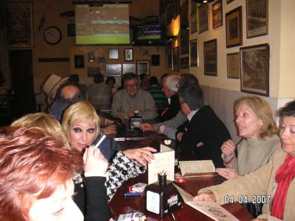

Después de las copas, Labrador y Sanffilippo nos llevaron a otro lado ¿...?, ya que las anchoas y el queso que tomamos con anterioridad nos hicieron a todos mutis, por lo que teníamos la necesidad de darle alegría a nuestro cuerpo
y nada mejor para ello que meternos en una tasca de las buenas.
 |